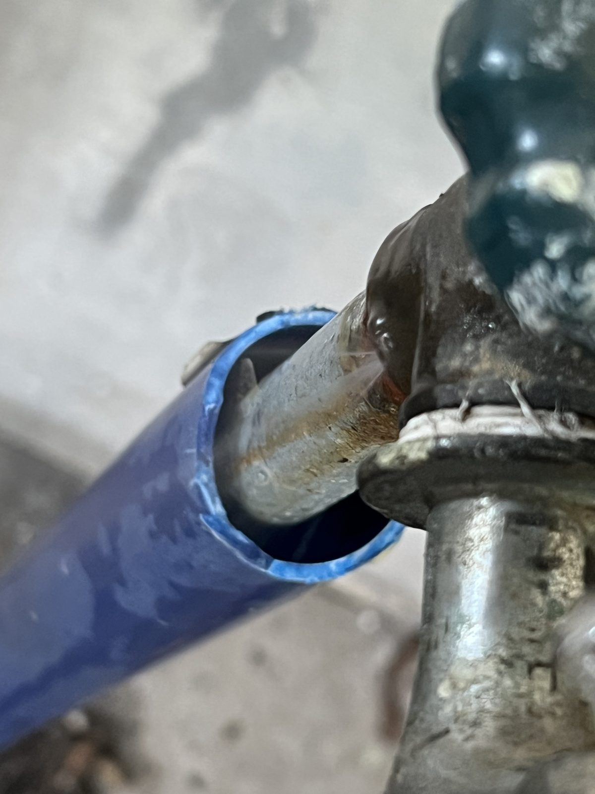
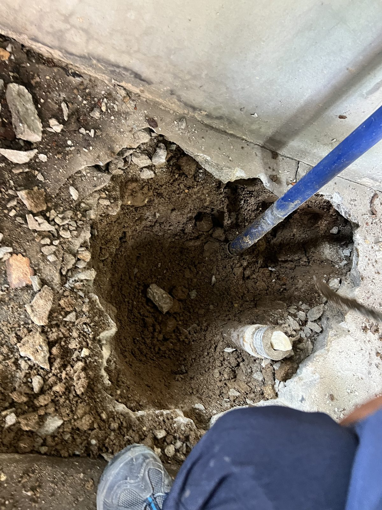
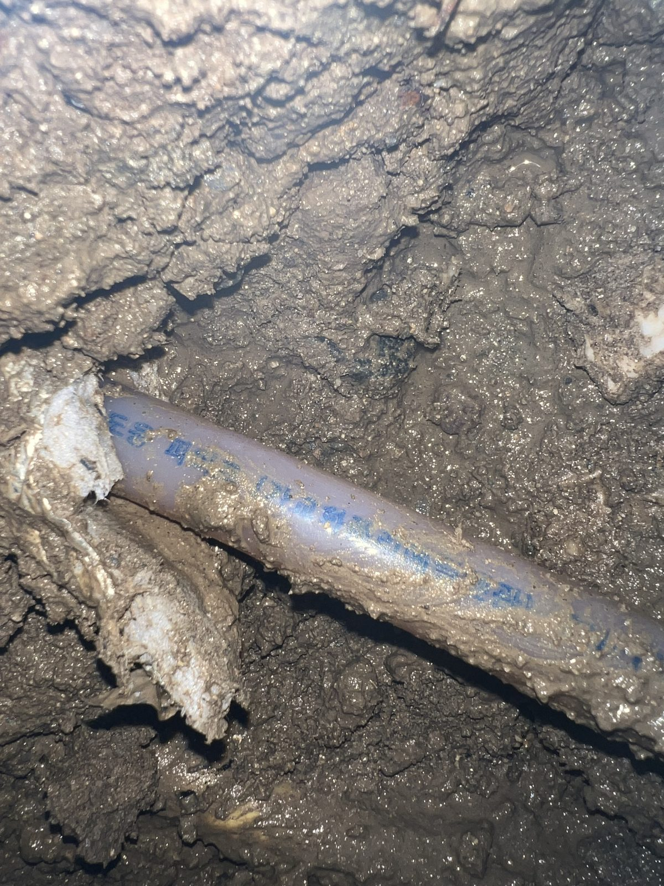
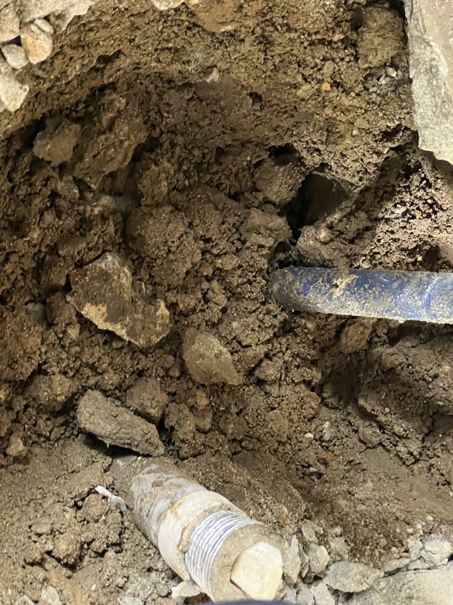
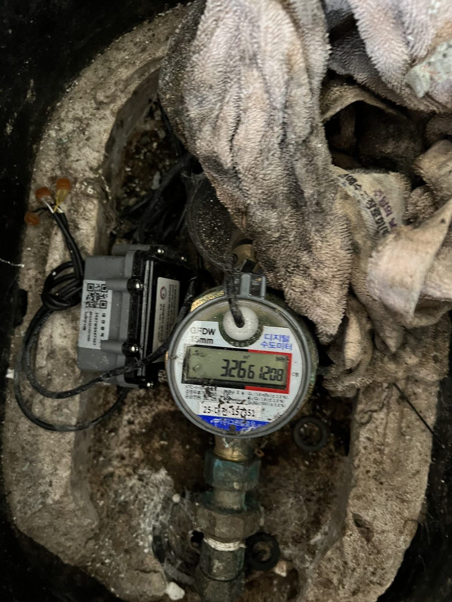

대전 중구 주택 마당 수도밸브 누수 보수 — 매설부 확인 후 문제 밸브 제거

현장 작업 한눈에 보기
- 현장
- 대전 중구 문화동 주택 마당
- 문제
- 수도밸브 주변 토사 젖음과
매설 배관 누수 확인 - 작업
- 매설부 굴착·배관 상태 확인
누수 원인이 된 밸브 제거 - 결과
- 불필요한 누수 지점 정리
수도계량기 주변 재확인
대전 중구 문화동 주택 마당에서 수도밸브 주변 누수가 확인돼 매설 배관을 따라 굴착했습니다. 젖은 토사와 배관 상태를 확인하고 문제 밸브를 제거한 뒤 수도계량기 주변까지 다시 살핀 현장 기록입니다.
마당 수도밸브 주변에서 물이 새고 있었습니다
안녕하세요. 대전 누수 현장을 직접 확인하고 보수하는 만물인테리어입니다. 이번 현장은 마당에 설치된 수도밸브 주변에서 누수가 보여, 땅속 배관과 계량기까지 연결 상태를 차례로 살폈습니다.
노출된 밸브 연결부부터 확인했습니다
먼저 외부에서 보이는 수도밸브와 배관 연결 부분을 가까이 확인했습니다. 겉으로 드러난 한 지점만 보고 판단하지 않고, 배관이 땅속으로 이어지는 방향까지 작업 범위에 포함했습니다.

매설 배관을 따라 마당을 굴착했습니다
밸브 아래쪽 배관을 확인하기 위해 주변 콘크리트와 토사를 필요한 만큼 걷어 냈습니다. 수도관과 기존 부속이 함께 보이도록 작업 공간을 확보했습니다.

젖은 토사 속에서 배관 상태를 확인했습니다
배관 주변 흙이 젖어 있는 구간을 따라가며 관 표면과 연결 방향을 살폈습니다. 매설 배관 누수는 물이 흙 사이로 이동하기 때문에, 지표의 물 고임 위치와 실제 문제 지점이 다를 수 있습니다.

문제 밸브를 제거하고 배관 범위를 정리했습니다
현장 기록에 따라 누수 원인이 된 마당 수도밸브를 제거했습니다. 굴착한 자리에서는 남은 배관과 기존 부속의 위치를 다시 확인해 이후 복구 범위를 정리했습니다.

표면의 물 고임과 실제 누수 지점은 다를 수 있습니다
마당에서는 물이 보이는 자리만 파면 실제 누수 지점을 놓칠 수 있습니다. 밸브와 계량기 사이의 배관 방향을 따라 젖은 흙을 확인하고, 현장 기록에 남은 문제 밸브를 제거했습니다. 드러난 배관과 계량기 사진을 함께 남겨 이후 점검 때 비교할 기준도 만들었습니다.
마지막에는 수도계량기 주변을 다시 살폈습니다
작업 후 수도계량기와 주변 연결부를 확인하며 현장 기록을 마무리했습니다. 집 안에서 물을 쓰지 않는데도 계량기 표시가 계속 움직이거나 마당 한곳이 반복해서 젖는다면, 밸브와 매설 배관을 함께 점검하는 것이 좋습니다.
